Agent UI · HTTP 集成实拍
真实 React + HTTP + SQLite；隔离 TEST 数据和测试模型，不是 Live 准确率证明，不是原型 HTML。批准 UI 保持项目树、Agent、Composer 与按需画布。
UI source: 3e9d8f51d89be21851c4920ddeda4ea06d2c7a43
打开隔离应用新任务与项目树
http://127.0.0.1:8810/projects/TEST-agent-ui-5eab0e5d-e7f2-43a7-8daf-bf415d81048b/work?task=new%3ATEST-agent-ui-5eab0e5d-e7f2-43a7-8daf-bf415d81048b · 1440×960 · light · TEST / real HTTP+SQLite; external model fixture; not Live accuracy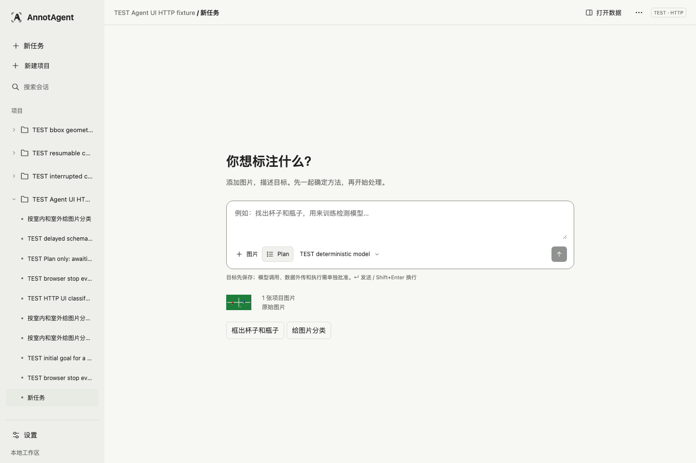
真实规划授权范围
Only GET preview; no approval or new model call during capture.
http://127.0.0.1:8810/projects/TEST-agent-ui-5eab0e5d-e7f2-43a7-8daf-bf415d81048b/work?task=7539fc3d-3682-4105-9bb9-dc2cd09d56d2 · 1440×960 · light · TEST / real HTTP+SQLite; external model fixture; not Live accuracy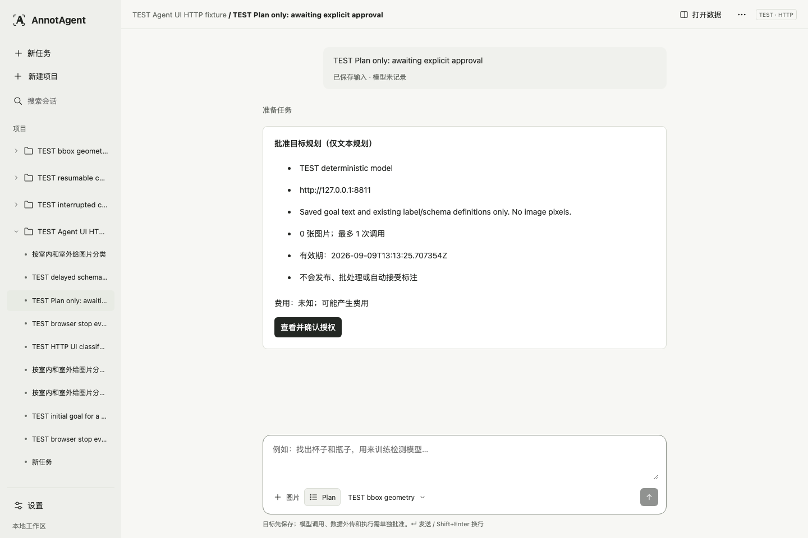
样例分类与真实图片
Synthetic TEST pixels, not a model accuracy demonstration.
http://127.0.0.1:8810/projects/TEST-agent-ui-5eab0e5d-e7f2-43a7-8daf-bf415d81048b/work?task=a60dff72-7bef-4003-b995-860dd28f1e63&pane=image · 1440×960 · light · TEST / real HTTP+SQLite; external model fixture; not Live accuracy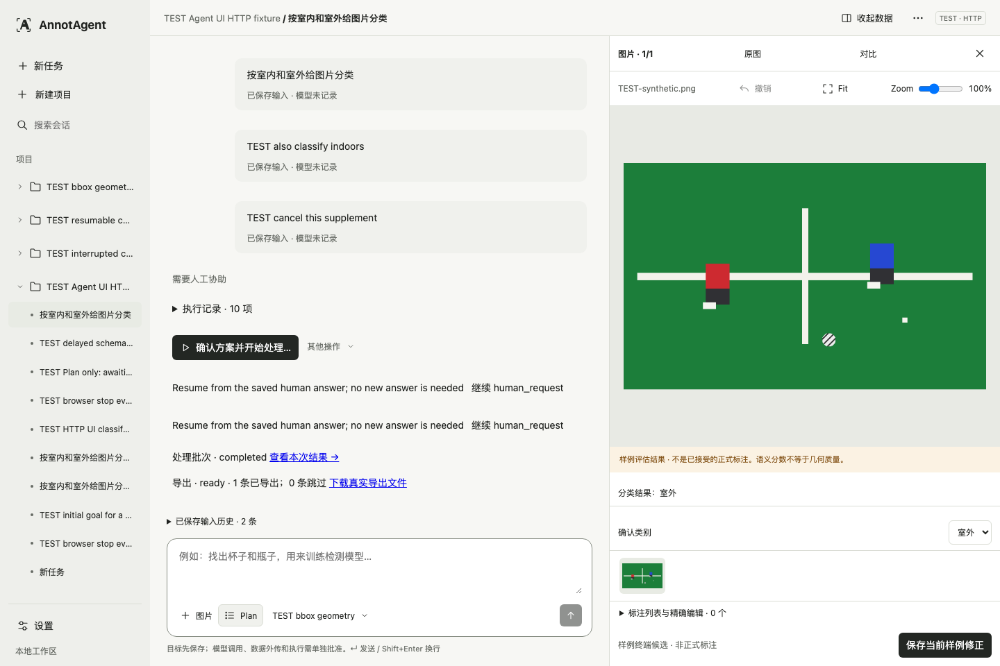
已保存的框修正
Sandbox feedback, not accepted dataset annotations.
http://127.0.0.1:8810/projects/TEST-agent-ui-bbox-d6935360-fd29-4baf-949e-49fe9ec85ea8/work?task=5f620544-164d-4342-94cd-ab49b7775271&pane=image&image=1fde4f24-7513-55fb-89e0-4b79dfad510a · 1440×960 · light · TEST / real HTTP+SQLite; external model fixture; not Live accuracy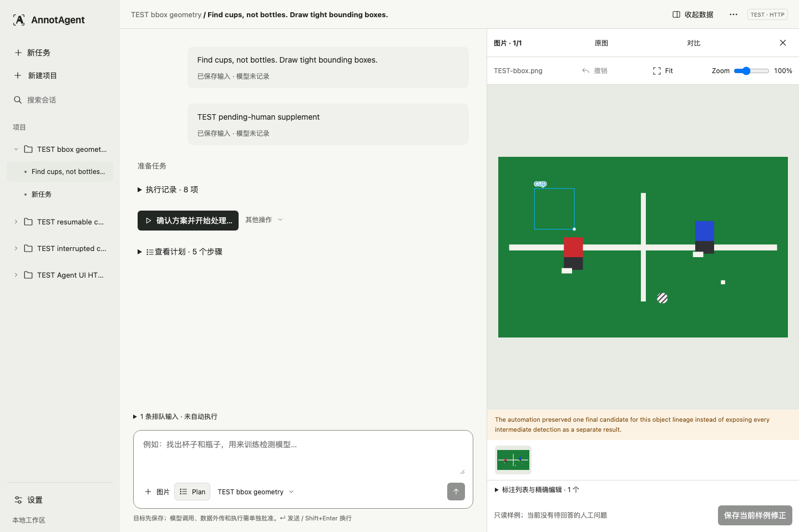
深色画布
http://127.0.0.1:8810/projects/TEST-agent-ui-bbox-d6935360-fd29-4baf-949e-49fe9ec85ea8/work?task=5f620544-164d-4342-94cd-ab49b7775271&pane=image&image=1fde4f24-7513-55fb-89e0-4b79dfad510a · 1440×960 · dark · TEST / real HTTP+SQLite; external model fixture; not Live accuracy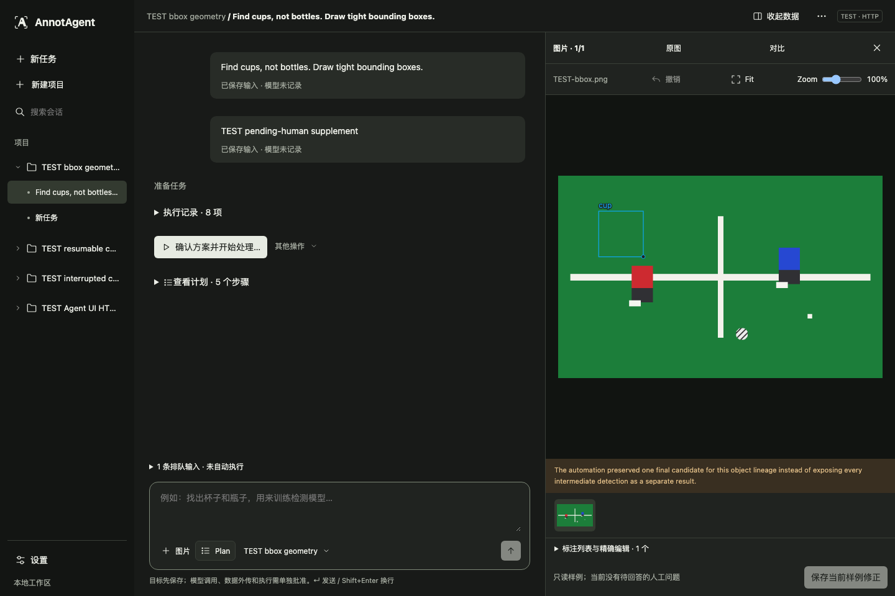
已中断，不虚构继续能力
http://127.0.0.1:8810/projects/TEST-agent-ui-interrupted-35a1488f-85a1-4344-84cf-e69072ae8c0e/work?task=21fa6c89-3b9b-48ab-88a4-112c4a2d78dd · 1440×960 · light · TEST / real HTTP+SQLite; external model fixture; not Live accuracy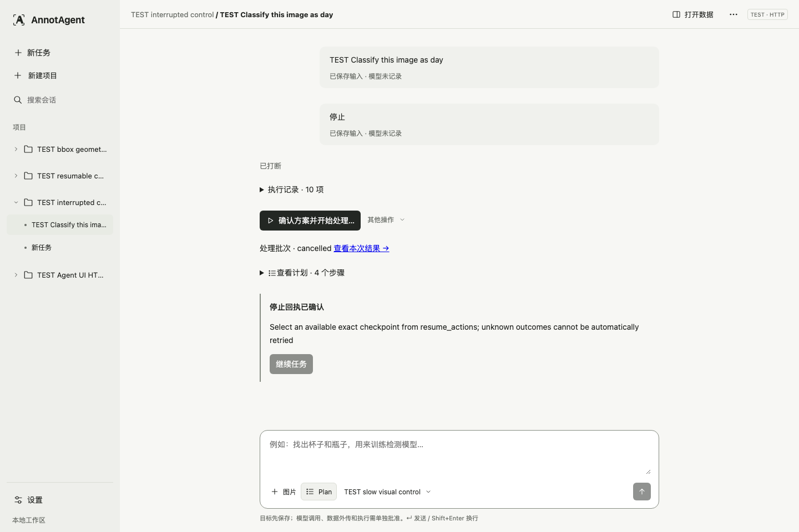
停止后的未知结果
The initial stopping state is evidenced by the real HTTP response; it is not artificially held for a screenshot.
http://127.0.0.1:8810/projects/TEST-agent-ui-5eab0e5d-e7f2-43a7-8daf-bf415d81048b/work?task=e37a1deb-d811-4657-9f08-5a04338f69fc · 1440×960 · light · TEST / real HTTP+SQLite; external model fixture; not Live accuracy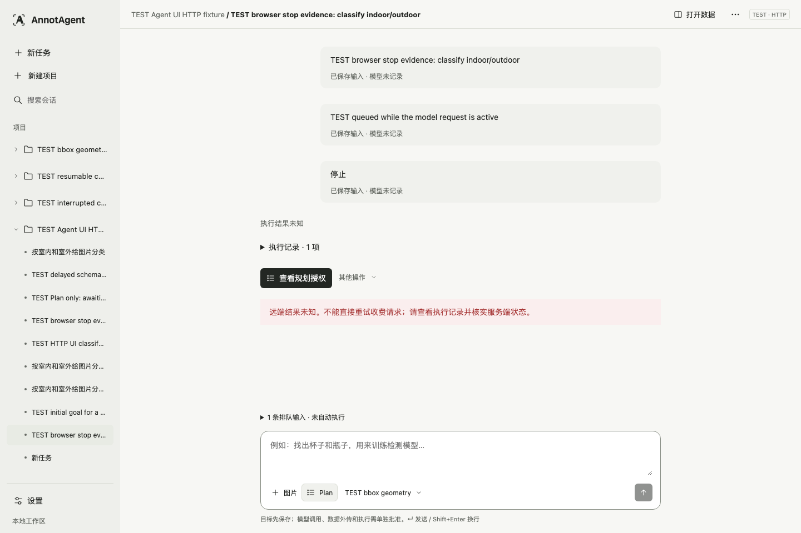
真实 Registry 模型选择
http://127.0.0.1:8810/projects/TEST-agent-ui-5eab0e5d-e7f2-43a7-8daf-bf415d81048b/work?task=new%3ATEST-agent-ui-5eab0e5d-e7f2-43a7-8daf-bf415d81048b · 1440×960 · light · TEST / real HTTP+SQLite; external model fixture; not Live accuracy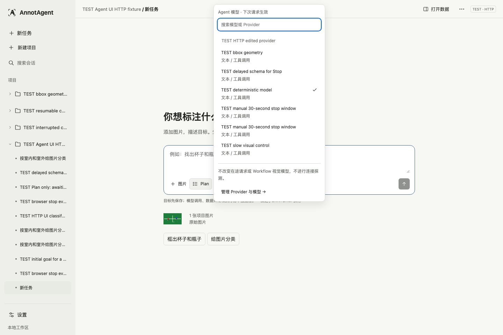
通用
http://127.0.0.1:8810/projects/TEST-agent-ui-5eab0e5d-e7f2-43a7-8daf-bf415d81048b/work?task=a60dff72-7bef-4003-b995-860dd28f1e63&settings=general · 1440×960 · light · TEST / real HTTP+SQLite; external model fixture; not Live accuracy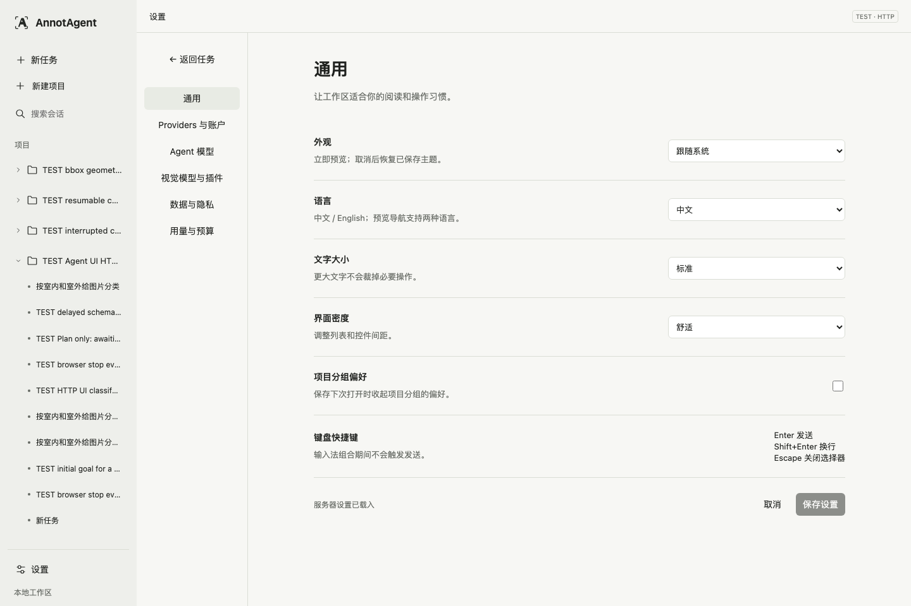
Providers
http://127.0.0.1:8810/projects/TEST-agent-ui-5eab0e5d-e7f2-43a7-8daf-bf415d81048b/work?task=a60dff72-7bef-4003-b995-860dd28f1e63&settings=providers · 1440×960 · light · TEST / real HTTP+SQLite; external model fixture; not Live accuracy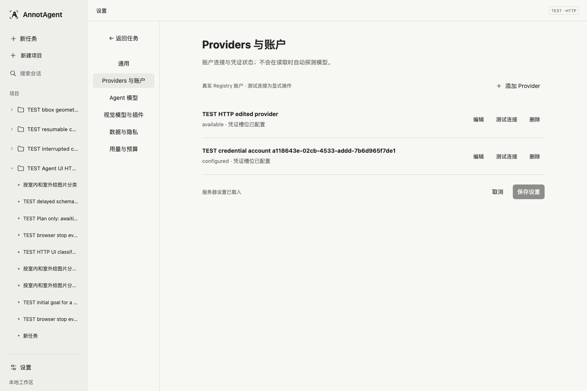
Agent 模型
http://127.0.0.1:8810/projects/TEST-agent-ui-5eab0e5d-e7f2-43a7-8daf-bf415d81048b/work?task=a60dff72-7bef-4003-b995-860dd28f1e63&settings=agent · 1440×960 · light · TEST / real HTTP+SQLite; external model fixture; not Live accuracy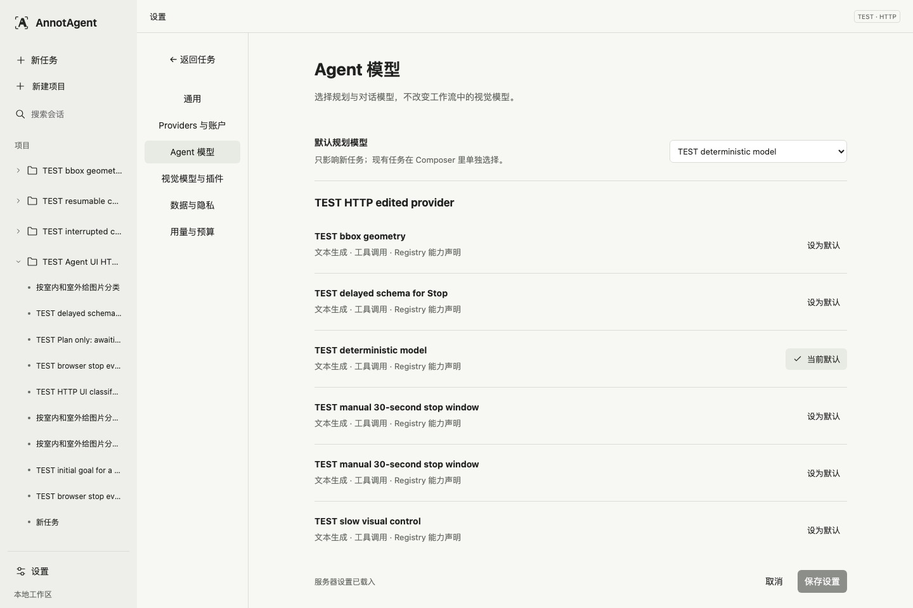
视觉模型与插件
http://127.0.0.1:8810/projects/TEST-agent-ui-5eab0e5d-e7f2-43a7-8daf-bf415d81048b/work?task=a60dff72-7bef-4003-b995-860dd28f1e63&settings=vision · 1440×960 · light · TEST / real HTTP+SQLite; external model fixture; not Live accuracy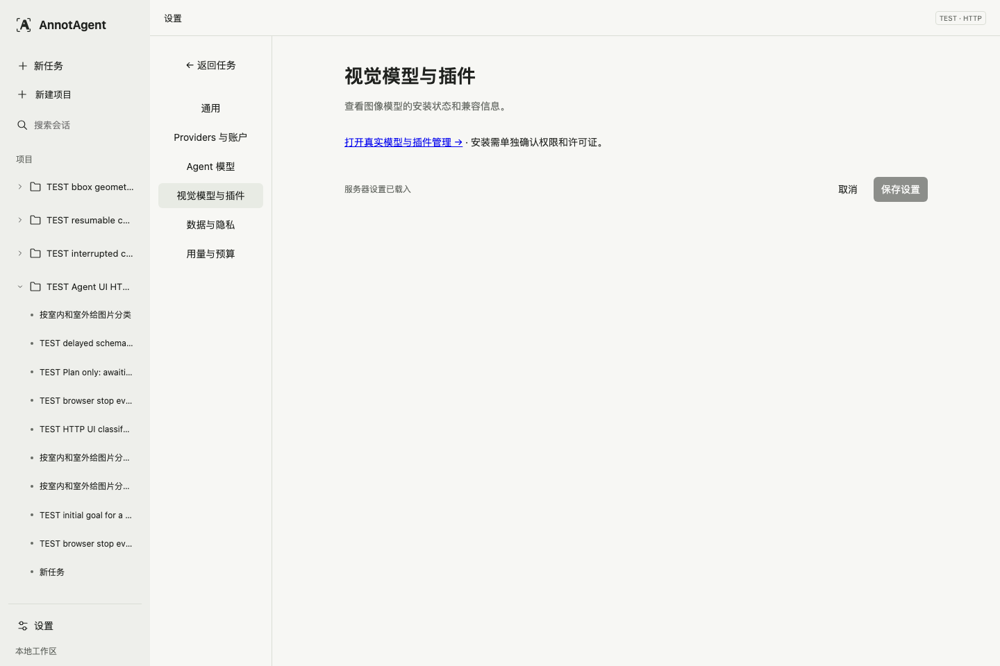
数据与隐私
http://127.0.0.1:8810/projects/TEST-agent-ui-5eab0e5d-e7f2-43a7-8daf-bf415d81048b/work?task=a60dff72-7bef-4003-b995-860dd28f1e63&settings=privacy · 1440×960 · light · TEST / real HTTP+SQLite; external model fixture; not Live accuracy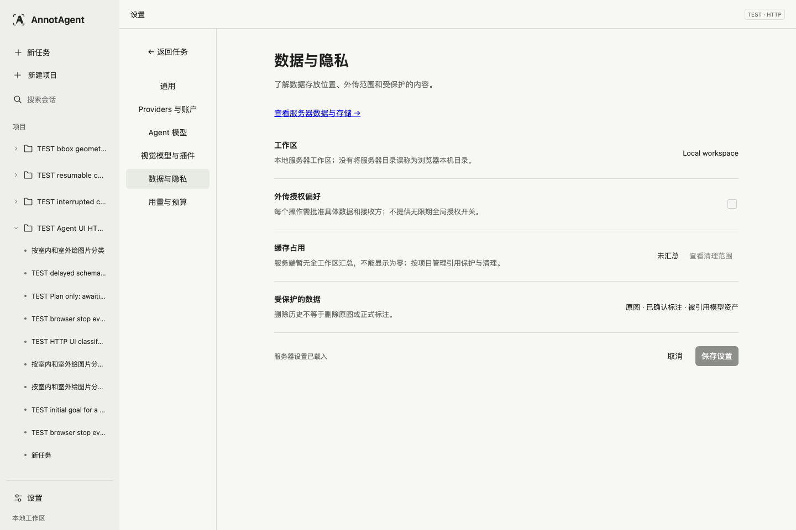
用量与预算
http://127.0.0.1:8810/projects/TEST-agent-ui-5eab0e5d-e7f2-43a7-8daf-bf415d81048b/work?task=a60dff72-7bef-4003-b995-860dd28f1e63&settings=usage · 1440×960 · light · TEST / real HTTP+SQLite; external model fixture; not Live accuracy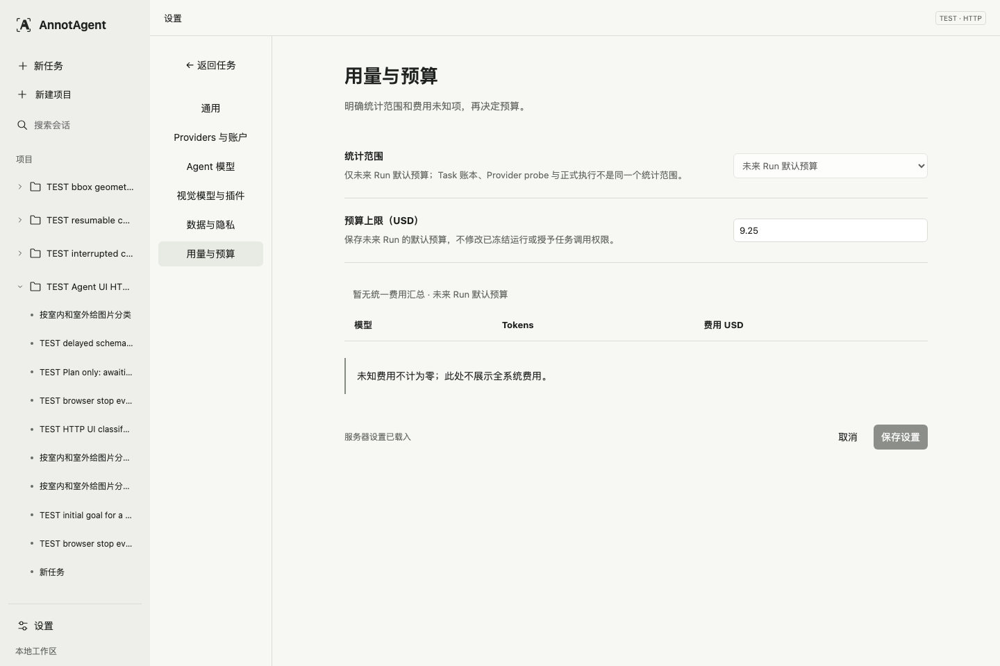
手机查看结果
390×844 viewport, not native 200% browser zoom.
http://127.0.0.1:8810/projects/TEST-agent-ui-bbox-d6935360-fd29-4baf-949e-49fe9ec85ea8/work?task=5f620544-164d-4342-94cd-ab49b7775271&pane=image&image=1fde4f24-7513-55fb-89e0-4b79dfad510a · 390×844 · light · TEST / real HTTP+SQLite; external model fixture; not Live accuracy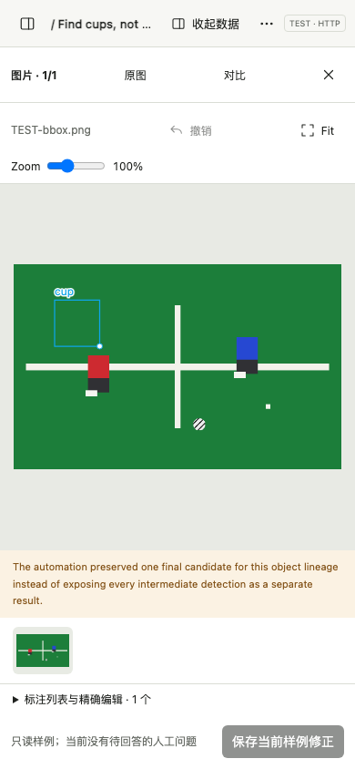
真实执行与一条排队输入
Captured by the HTTP browser test while the server call was reserved. See its real-test-scene and initial-stop-receipt attachments.
HTTP E2E scene attachment · 1440×960 · light · TEST / real HTTP E2E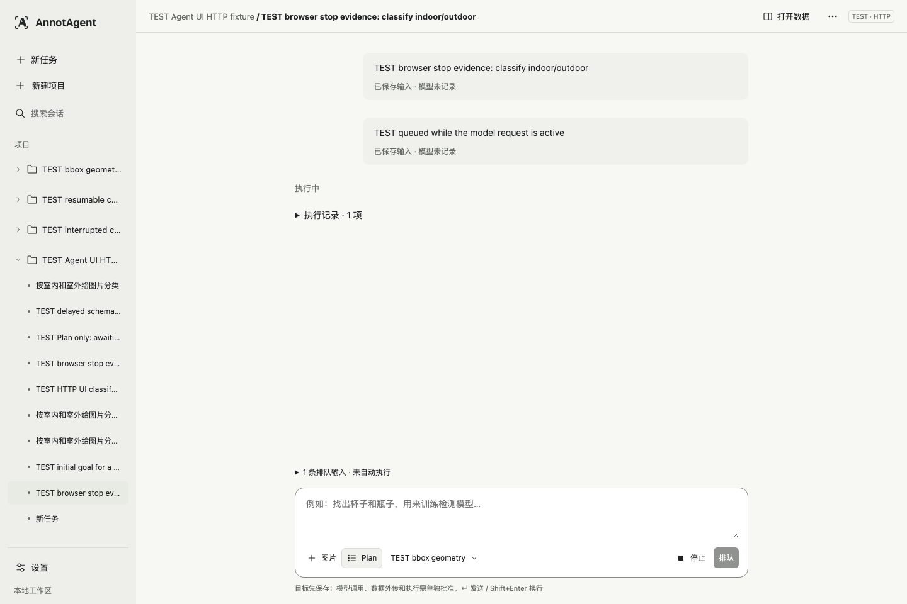